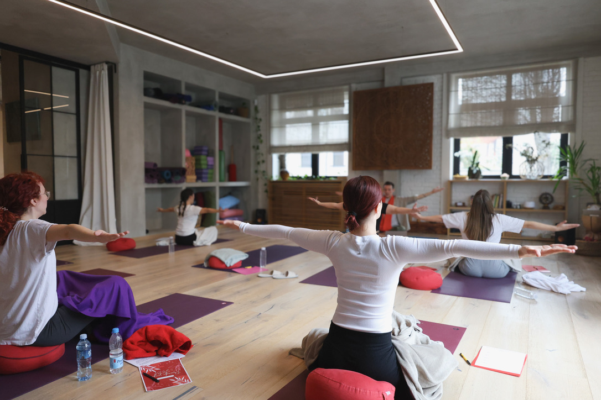
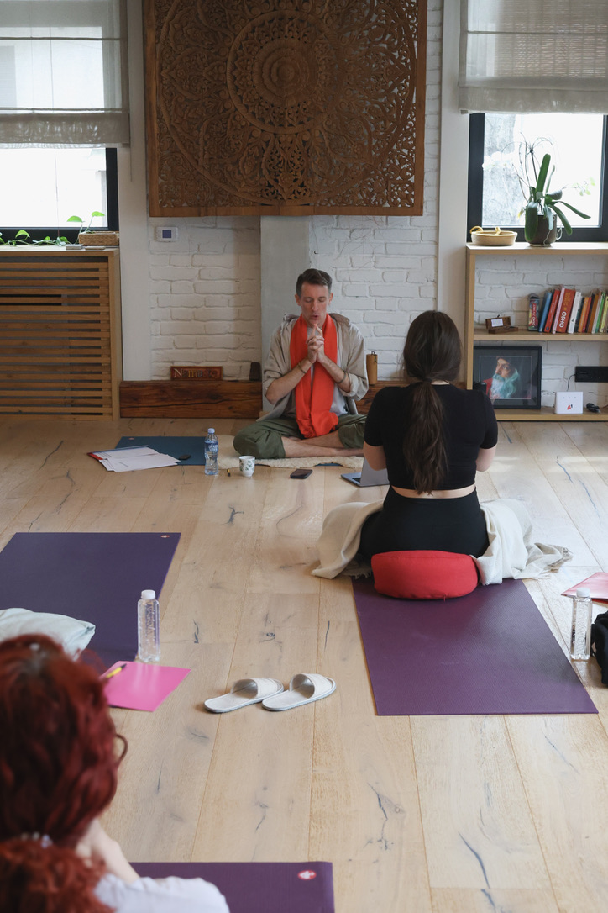
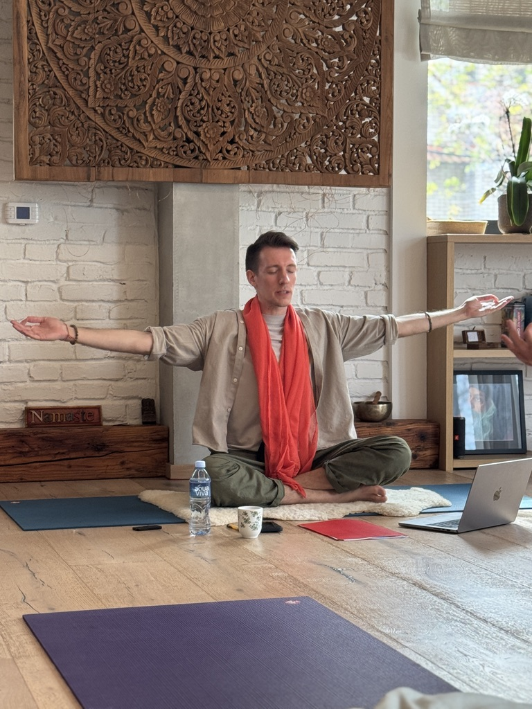
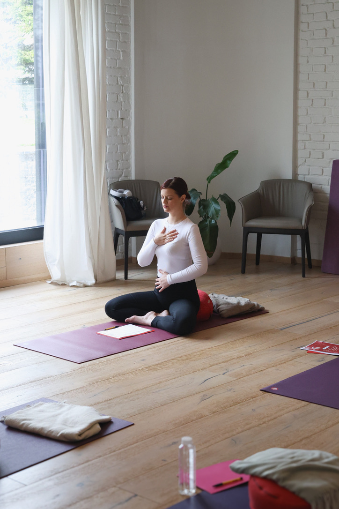
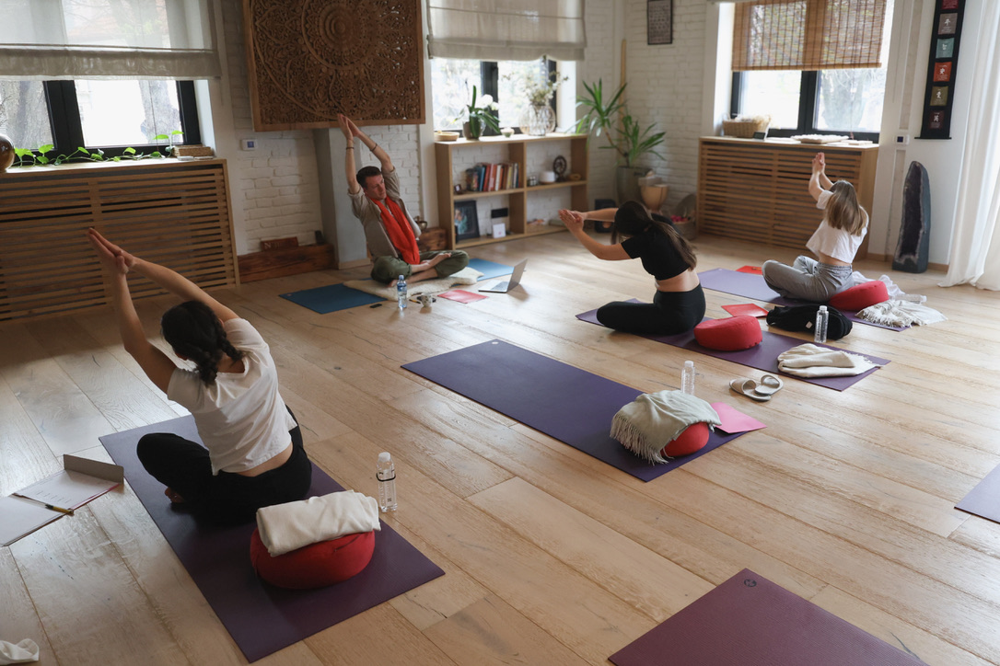
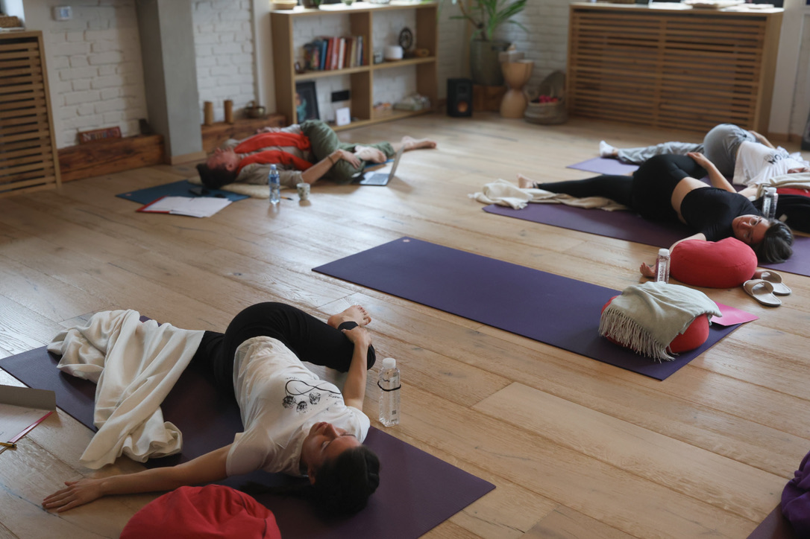

Kundalini joga i meditacija · 77€ mesečno
Nedeljna Kundalini joga i meditacija
Mesto gde izgradiš pravu praksu – uz zajednicu koja te drži čak i kada sam ne možeš.
Za koga je ovo
Za koga je Akal zajednica
Počneš – nedelja, dve, tri. Onda nešto upadne. Putovanje, gužva, loš dan. I sve kreće ispočetka. Ne jednom – svaki put.
Stres se nakuplja u telu. Lošije spavaš, teže se koncentrišeš. I znaš šta bi pomoglo. Ali dan prođe.
Ovo nije pitanje discipline. To je pitanje sistema – i zajednice koja te drži čak i kada ti je teško.
Znaš da ti praksa pomaže – ali ne uspevaš da je održiš kada ti je najpotrebnija.
Akal postoji upravo za to. Iz nedelje u nedelju, Kundalini joga i meditacija uče tvoj nervni sistem da se reguliše, um da se smiri i telo da otpusti ono što nosi.

Šta je uključeno
Šta je uključeno u Akal zajednicu

Nedeljna Kundalini joga
Jedan online čas uživo svake nedelje. Kundalini joga radi istovremeno na nervnom sistemu, energetskom telu i umu – gradeći snagu, fleksibilnost i unutrašnji mir iznutra. Svaki snimak časa dostupan je ceo mesec.

2 večeri meditacije / mesečno
Dve posebne večeri svakog meseca za dublju meditativnu praksu. Ove sesije su više od tehnike – to su prostori za tišinu, emotivno otpuštanje i istinsko ponovno povezivanje sa sobom.

Privatna WhatsApp zajednica
Privatna grupa za podršku, deljenje i povremene zadatke između sesija. Svaki mesec ima svoju temu – a prostor je otvoren za učesnike da ga koriste kako im odgovara.

Snimci dostupni ceo mesec
Svaki susret - i nedeljni Kundalini čas i večer meditacije - se snima i dostupan ti je do kraja mesečnog ciklusa. Ako ne možeš uživo, gledaš kada ti odgovara.
Šta se menja
Šta donosi redovna Kundalini joga i meditacija
Iz nedelje u nedelju, počinješ da primećuješ razliku – u telu, u reakcijama, u tome kako dočekuješ dan.
- Tvoj nervni sistem može da nauči da se reguliše
- Emotivni teret koji je bio zaglavljen počinje da dobija prostor
- Možeš da osećaš više energije i prisutnosti u svakodnevnom životu
- Zajednica ti daje osećaj da nisi u ovome jedini
- Prostor bez osude u kome možeš da istražuješ sebe bez pritiska
Iskustvo iz zajednice
Utisci iz Akal zajednice
"40 dana meditacije i Kundalini joge uradili su za mene više nego godine terapije. Odabrala sam da radim bliže sa Nemanjom – bila sam na njegovoj radionici, postala deo Akal zajednice i išla na 1:1 sesije. Od prvog dana sam znala da je ovo mesto gde treba da budem."
Član Akal zajednice
Zašto Kundalini joga i meditacija deluju
-
Kundalini joga smiruje nervni sistem
Telo drži sve što um ne uspe da obradi. Napetost, obrazac koji se ponavlja, strah koji nigde ne odlazi – sve to ima adresu u sistemu. Kundalini joga i meditacija omogućavaju sistemu da to prepozna i otpusti. Ne pričamo o tome. Otpuštamo to.
-
Meditacija donosi prirodnu jasnoću
Kundalini joga i meditacija ne smiruju te tako što isključuju misli. Smiruju te tako što regulišu nervni sistem – telo prelazi iz stanja napetosti u stanje obnove. Ta jasnoća nije iluzija. To je tvoje prirodno stanje kada nisi pod stresom.
-
Redovna Akal praksa vraća autentičan kontakt
Ono što te godinama odvaja od sebe nije slabost – to je zaštita koja je jednom imala smisla. Redovna praksa polako skida te slojeve. Ne postaješ neko drugi. Postaješ više ko zaista jesi – ispod svega onoga što si nosila.
Postavljamo temelje
Šta Akal zajednica jeste, a šta nije
Akal jeste
- ✓redovna praksa
- ✓regulacija i uzemljenje
- ✓kontinuitet i stabilnost
- ✓podrška zajednice
- ✓održavanje odnosa sa sobom
- ✓ulazna ili prateća ponuda
Akal nije
- ×individualno prilagođen proces
- ×rad jedan-na-jedan na konkretnom obrascu
- ×zamena za RESET ili Transform
- ×psihoterapija ili zdravstveni tretman
- ×prostor za rešavanje akutnih problema
Pitanja i odgovori
Pitanja o Akal zajednici
Zajednica u pokretu
Trenuci iz Akal zajednice
Stvarni trenuci sa stvarnih sesija. Svako okupljanje nosi svoju energiju.
Bonus kada se priključiš
Dve besplatne Akal radionice za nove članove
Aktiviraj svoju intuiciju
Intuicija nije dar koji imaš ili nemaš — to je sposobnost koju možeš da otvoriš i ojačaš. Kroz duge meditacije i posebne Kundalini tehnike, učiš da razlikuješ unutrašnji glas od straha i naučenih obrazaca.
Zašto znanje nije dovoljno
Razumeš obrazac. Znaš odakle dolazi. I opet reaguješ isto. Ova radionica objašnjava šta je to što zapravo drži obrazac na mestu i gde prava promena počinje.